SAVVY on Android
The Android version: Material 3 screens, night and day, and a Live Update for the hand-off.
Illustrative prototype calculation, not a live verified price
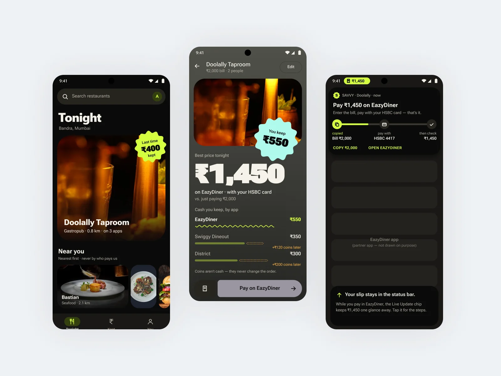
Platform principles
Same flow and same order as iOS: the price first, then what you keep, then the maths. Android gets its own patterns. I used Material 3 components and a sticker for what you keep, and a Live Update chip takes the place of the Dynamic Island.
UI type: Inter. The price is always the biggest thing on the screen.
Key decisions and reasons
Material 3 does the heavy lifting, so the screens feel like they belong on the phone. The order never changes: the price first, then what you keep, then the maths.
- One price first: the cash you pay tonight.
- What you keep sits on a sticker, compared with just paying the bill.
- Coins sit on their own line and never change the order.
- The hand-off is a Live Update, so the slip stays in the status bar while you pay. SAVVY never pays.
How the Android screen got here.
The same moment every time: comparing the apps for one bill. Four passes, from a plain Material 3 list to one answer.
- 01
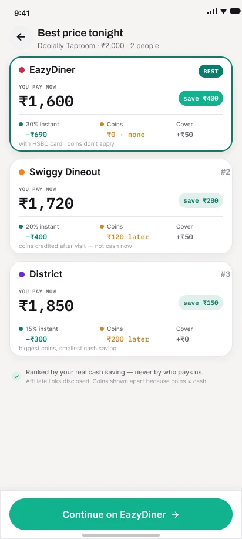
First Material 3 passEach app as an outlined card, ranked by what you pay now.
- 02
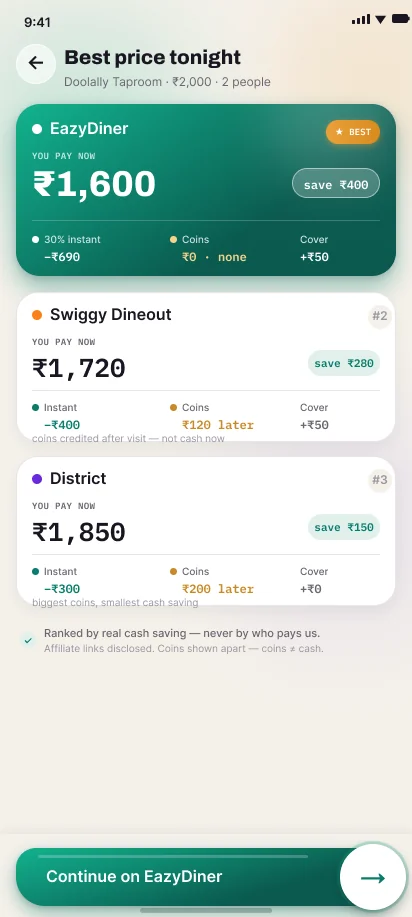
A winner you can seeThe cheapest app gets a filled card. The button stays pinned at the bottom.
- 03
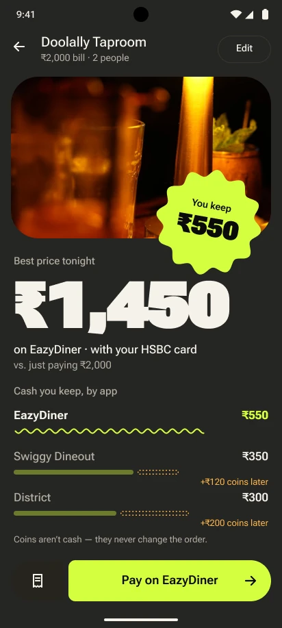
One answer, nightThe list turns into one price, and a sticker for what you keep.
- Final
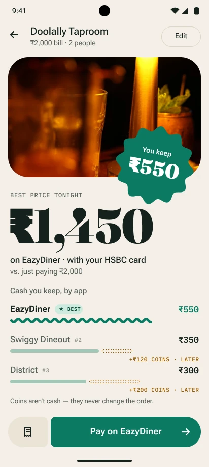
And in daylightA serif carries the price, teal takes over from lime.
Choosing a place and typing the bill.
From tonight's places to one answer in four screens.
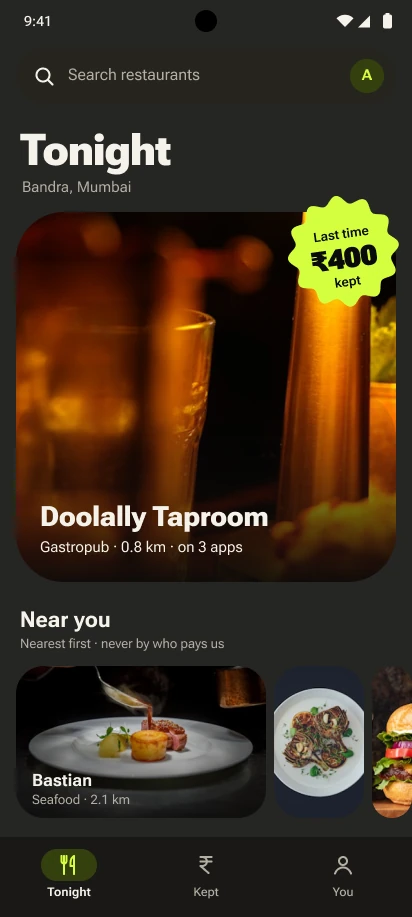
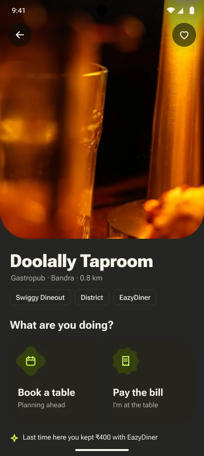
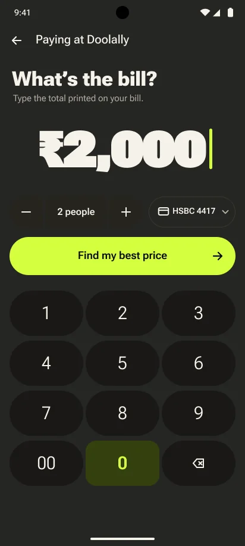
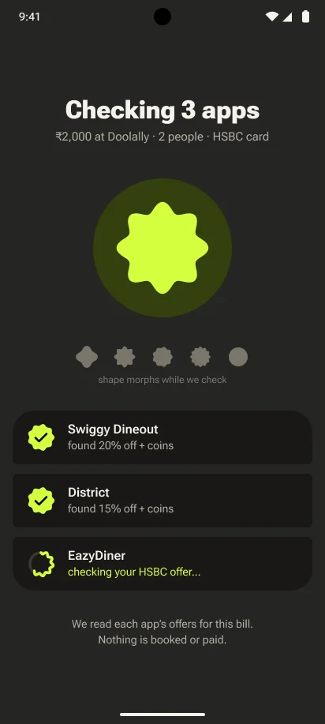
The answer screen
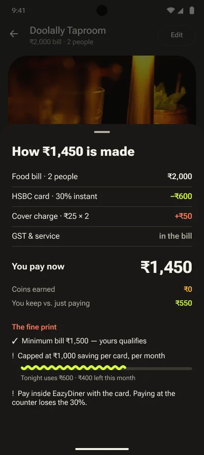
The cash you pay tonight.
Compared with just paying the bill.
Pull it up when you want it. Coins sit on their own line and never change the order.
The same answer in daylight.
Teal replaces lime and a serif carries the price. The order stays the same: the price first, then what you keep, then the maths.
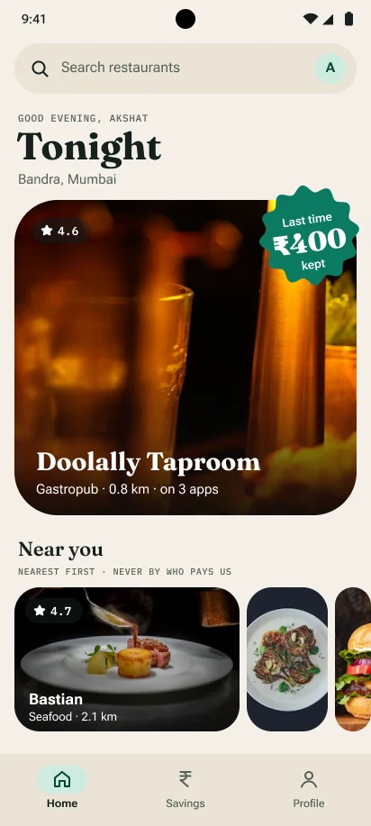
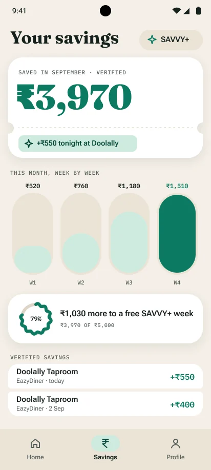
Handing off, then checking the price.
The part most comparison tools skip: did the price you were promised actually hold?
The Live Update and the lock-screen check are UI concepts, not working system features.
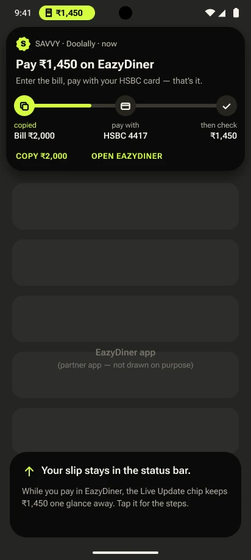
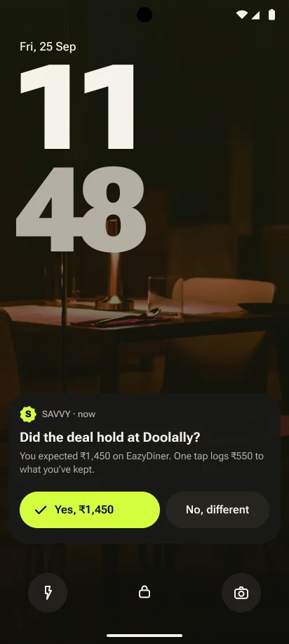
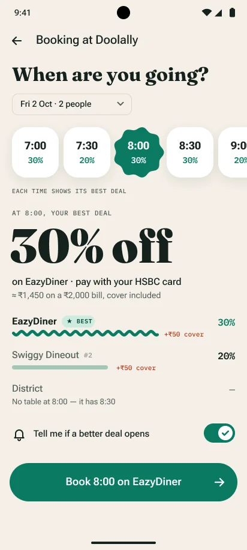
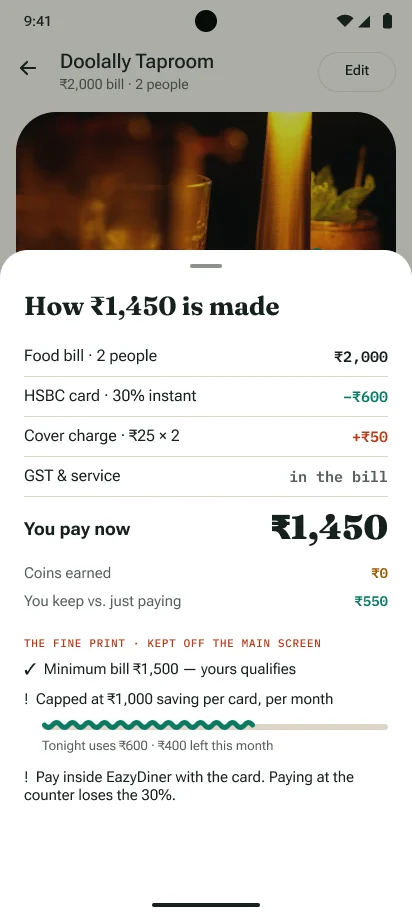
Swiping through restaurants, on Android.
Right to book, left to skip, up for the full profile. Same idea as iOS, and it stays out of the main flow until it's tested.
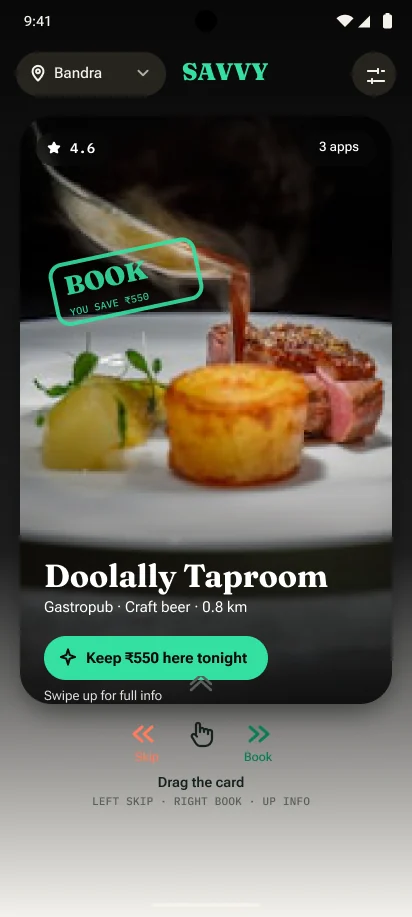
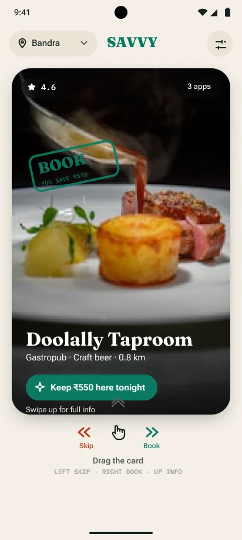
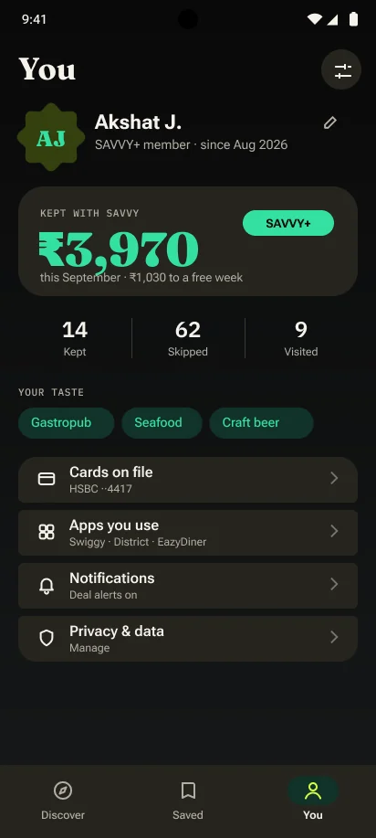
Platform limits
The Live Update chip is a UI concept, not a working system feature.
Next stepThe test planWhat I'll test first, and the data problem a live SAVVY has to solve.